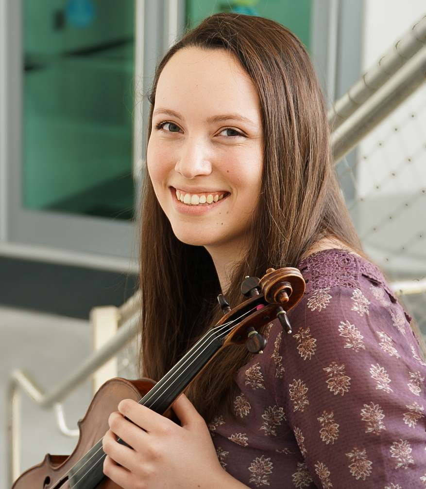

Claire Geho
2922 Mather's Way
Twinsburg, Ohio 44087
Dual Citizenship USA and Canada
cmg285@miami.edu
440-591-9339
Education
University of Miami, Frost School of Music
- Major: Bachelor of Instrumental Performance (Violin)
- Minors: Communication, Music Business and Entertainment Industries
- President's Scholarship Recipient
- President's and Provost's Honor Rolls and Dean's List
- 3.969 GPA
Work Experience
Substitute Violinist
- New World Symphony
- The Florida Orchestra
Visual Designer
The Miami Hurricane Newspaper, University of Miami
- Create visuals and place articles for the weekly student newspaper
- Collaborate with editors to cut and edit works to fit the designs before deadlines
- Create high quality and informative news representing the student body
Certified Red Cross Lifeguard
Solon Community Center, Solon, Ohio
- Manage the pool with team members and assist patrons
- Enforce rules and safety regulations within the facility
- Provide emergency care and first aid
- Maintain facilities and equipment
Volunteer
The Gathering Place, Cleveland, Ohio
a non-profit support center for cancer patients and their families
- Make crafts with and encourage families
- Assist with organization activities including cleaning facilities, arts and crafts, and child
sitting
Skills
- Excellent communication skills
- For-profit and volunteer violin performance activities
- Web and graphic design experience (Adobe Photoshop, InDesign, Illustrator)
- Photography experience
Activities and Honors
- Frost School of Music Concerto Competition Winner
- National Repertory Orchestra- Section Violin
- National Youth Orchestra of Canada- Section Violin
- The Castleman Quartet Program- Participant
- National Youth Orchestra of the United States of America- Section Violin
